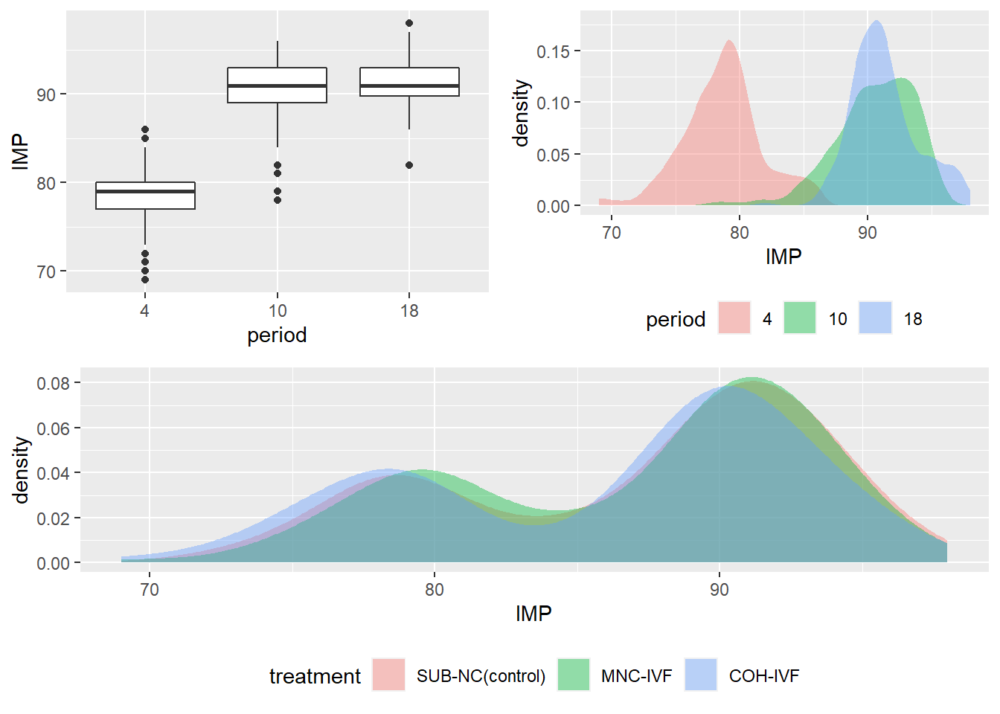
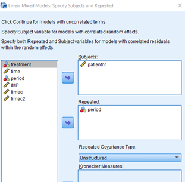
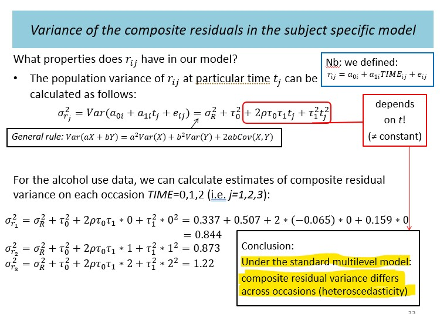

For testing, use \(\alpha=0.05\) unless otherwise specified. Datsets can be found under our shared drive.
This exercise examines longitudinal data analyses as shown in the lecture in the context of a different study and data file. You wil focus on the choice of the random part of the model, and various comparisons.
Open the data file practical4_imp1.sav. The data consists of an outcome variable IMP (Infant Motor Profile) that is a summary measure for neurological performances in children. IMP is scaled to a percentage from 0 to 100 (higher is better). The children in this study were tested around ages four months, ten months and eighteen months. The variable period indicates the three periods in months (4, 10, and 18), while the variable time is a continuous measure in weeks. The children were born from mothers that were treated for fertility under different conditions: COH-IVF, MNC-IVF, and SUB-NC. The first two groups received IVF treatments with and without ovarian hyper-stimulation, respectively, and the third group is the control group.
IMP variable: describe how its distribution changes depending on the period and on the treatment. What are your conclusions just based on the descriptive investigation of this variable?
IMP test scores with respect to the variable period or the variable time. What can you say about the linearity of the time profile.The SPSS syntax for the graph is
GRAPH /LINE(MULTIPLE)=MEAN(IMP) BY period BY patientnr.
If you would like to see the graph for each treatment group separately, first use Data–Split File
Note that by using period instead of time as your independent variable, we generate a slightly better looking graphs, but this means that all responses are set at fixed time points (e.g., exactly 4 months), which is not necessarily precise. For evaluation of the time profile it satisfies our goal, though, time seems to influence IMP quadratically (parabolic shape).
# For *R Users:*
# Try the following:
d <- read.spss("data/practical4_imp1.sav", to.data.frame = TRUE)
# Separate trajectory for each patient
ggplot(d) +
geom_line(aes(y=_____, x=_____,
group=_____, color=_____))
# Separate trajectory for each treatment
ggplot(d %>% na.omit(IMP) %>% group_by(_____, _____) %>% summarize(IMP=mean(_____))) +
geom_line(aes(y=_____, x=_____, color=_____))Note to all users
Before fitting the model, centralize the time by subtracting its mean from it, and dividing the result by its standardized deviation. You will find that your new variable time_c=(time-47)/25.
You may choose a random effect for the intercept and for the slope of the variable time_c, but you will not be able to choose a random effect for quadratic time in your model. Although SPSS will estimate the quadratic term, R would refuse, and rightly so. There are too little observations (3 and sometimes even less per child) to correctly identify a random quadratic term as well.
Your model will look as follows:
\[\begin{aligned} Y_{IMP} &= b_{0i} + b_{1i}\cdot X_{time_c}+ b_2\cdot X_{trt} + b_3\cdot X_{time_c}^2 + b_4\cdot X_{trt}\cdot X_{time_c} + b_5\cdot X_{trt}\cdot X_{time_c}^2 + e_{ij} \\ b_{0i} &= \beta_{00} + a_{0i} \\ b_{1i} &= \beta_{10} + a_{1i} \end{aligned}\]R Users : The formula you will be using in your reml function would look like this (remember to center your time variable):
IMP ~ 1 + treatment + time_c+ time_c2 + treatment*time_c + treatment*time_c2 + (1 + time_c | patientnr)
IMP variable depends on the time variable. What are the expected IMP scores at periods 4, 10 and 18 months in each of the treatment groups?Since \(X_{time}\) is measured in weeks and not in months, you may assume that 4 months is about 17 weeks, 10 months is about 44 weeks and 18 months is about 78 weeks.
-2loglikelihood value, the AIC and BIC? Compare the values with the best model from previous analyses.For the marginal model we use the period variable instead of the time variable - but only as random time factor for the error covariance matrix.
If we had used the variable time, we would have obtained a new category for each unique value of time (since time is quite different for each of the subjects). This model could probably not be fit at all, since the data set would have been too small.
Furthermore, note that in this model the correlation between observations is independent of the real time differences for subjects at the three periods 4, 10 and 18 months. In other words, the correlation between the IMP for a child at 4.1 and 9.8 is the same as the correlation for a child with time points 3.8 and 10.2, for instance. This is acceptable only if these differences are small and close to each other compared to the distances in the periods. If this is unacceptable, the model proposed here should not have been fitted.
For R Users
Estimate the model given the code shown below. We have to add an extra line to tell the analysis to omit missing values (if you leave that out, the analysis will stop).
The variable period in the weights statement is treated as a categorical variable to be able to generate the variance-covariance matrix across time points. Period has only three levels, which means that R would build a three-dimensional normal distribution for the residuals in the model.
mdl <- gls(IMP ~ 1 + treatment + time_c + time_c2 + treatment*time_c + treatment*time_c2,
data = ________,
correlation = corSymm(form= ~ 1| patientnr),
weights= varIdent(form = ~ 1 | period),
na.action=na.omit,
method="REML")
The marginal model uses the /REPEATED statement instead of the /RANDOM statement (choose unstructured).
For SPSS Users
The marginal model uses the /REPEATED statement instead of the /RANDOM statement (choose unstructured). Note that we must take period in the repeated statement. This is necessary because this variable is treated as a categorical variable to be able to generate the variance-covariance matrix across time points. Period has only three levels, which means that SPSS would built a three-dimensional normal distribution for the residuals in the model.
Again determine the mean profile for the reference group and provide expected IMP scores for 4, 10, and 18 months in this group. Compare your predictions to the results in your previous analysis.
Fit an unstructured marginal model with a mean per treatment and period (mean saturated model). In other words, this final model ignores the time differences between subjects as a whole (in the variance-covariance and in the mean profile) and assumes that all times can be treated as a categorical variable. What are the -2loglikelihood value, the AIC, and BIC? Compare the values with the best model from previous analyses. Is this comparison allowed? If not what would you do to make the comparison reliable?
The code is very similar to the previous one, but this time we ignore the time differences between subjects as a whole (in the variance-covariance and in the mean profile) and assume that the times can be treated as a categorical variable. The script is given by:
mdl <- gls(IMP ~ 1 + treatment + period + treatment*period,
data = ________,
correlation = corSymm(form= ~ 1| patientnr),
weights= varIdent(form = ~ 1 | period),
na.action=na.omit,
method="REML")
gls(IMP ~ 1 + treatment + period + treatment*period,
data = imp1,
correlation = corSymm(form= ~ 1| patientnr),
weights= varIdent(form = ~ 1 | period),
na.action=na.omit,
method="REML") IMP scores at 4, 10 and 18 months?For SPSS users
You can get this from the output using \EMMEANS.
For R users
Try using library(emmeans) and add mode="df.error" to circumvent Satterthwaite-related estimation issues.
 The population variance at time t in the subject specific model.
This exercise uses (high-school) mathematics to further investigate properties of the population variance as defined in the subject specific model.
\[\begin{aligned} Y_{ij} &= b_{0i} + b_{1i}\cdot X_{time} + e_{ij} \\ b_{0i} &= \beta_{00} + a_{0i} \\ b_{1i} &= \beta_{10} + a_{1i} \\ &\text{and therefore the composite equation becomes...} \\ Y_{ij} &= \beta_{00} + \beta_{10}\cdot X_{time} + [ a_{0i} + a_{1i}\cdot X_{time} + e_{ij} ] \end{aligned}\]Where \(a_{0i}\) and \(a_{1i}\) covary accoding to the following relationship:
\[\begin{aligned} \begin{gather} \begin{bmatrix} a_{0i} \\ a_{1i} \end{bmatrix} &\sim \mathcal{N} \begin{pmatrix} \begin{bmatrix} 0 \\ 0 \end{bmatrix} , \begin{bmatrix} \tau_0^2 & \rho\tau_0\tau_1 \\ \rho\tau_0\tau_1 & \tau_1^2 \end{bmatrix} \end{pmatrix} \end{gather} \end{aligned}\]The variance of our residual is now:
\[\begin{aligned} \sigma^2_{r_{ij}} &= Var[a_{0i} + a_{1i}\cdot X_{time} + e_{ij} ] \\ &= \tau_0^2 + 2\rho\tau_0\cdot\tau_1\cdot X_{time} + \tau_1^2 \cdot X_{time}^2 + \sigma^2_r \end{aligned}\]Your job is to find the value \(X_{time}\), that will minimize the total variance \(\sigma^2_{r_{ij}}\). In other words, you need to take the derivative of the total variance and show that it is minimized for \(X_{time}= -\rho\frac{\tau_0}{\tau_1}\), and that the smallest variance equals \((1-\rho^2)\cdot\tau_0^2+\sigma^2_r\)